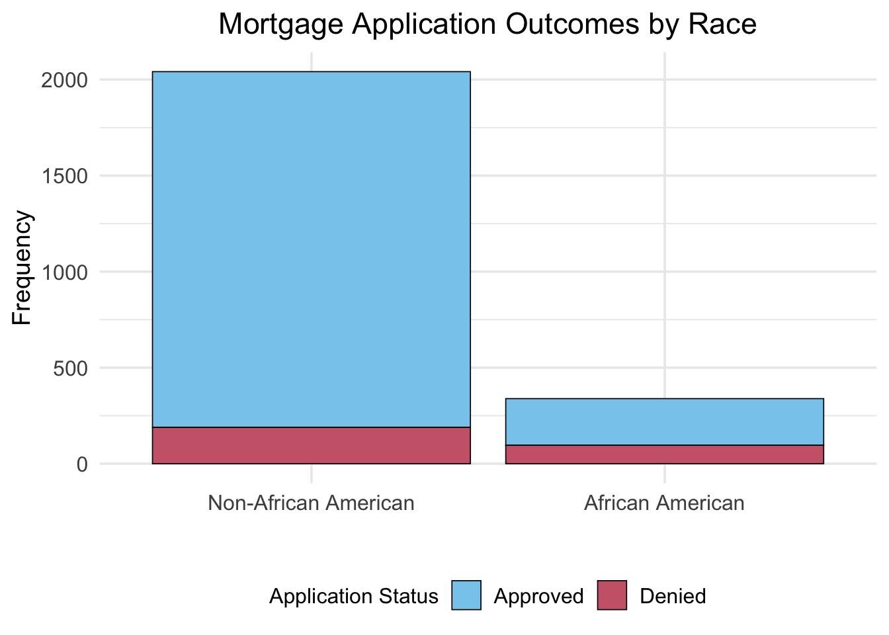

This approach is called the Linear Probability Model (LPM) because it estimates the probability that \(Y_i = 1\) as a linear function of the predictors.
Problems with LPM:
Predicted probabilities outside [0,1]: OLS can produce fitted values \(\hat{Y}_i < 0\) or \(\hat{Y}_i > 1\), which makes no sense for probabilities.
Heteroskedasticity: The error term variance depends on \(X\), violating the homoskedasticity assumption. This means standard errors are incorrect.
Nonlinear relationship: The effect of \(X\) on the probability of \(Y=1\) is unlikely to be constant across all values of \(X\). For example, increasing income from \$20,000 to \$30,000 likely has a different effect on mortgage approval than increasing from \$200,000 to \$210,000.
1.2 The Solution: Logit and Probit Models
To address these problems, we use nonlinear models that ensure predicted probabilities stay within [0,1]:
Logit model: Uses the logistic cumulative distribution function (CDF)
Probit model: Uses the standard normal cumulative distribution function (CDF)
2 The HMDA Dataset: Mortgage Lending Discrimination
We will use data from the Federal Reserve Bank of Boston collected under the Home Mortgage Disclosure Act (HMDA). The dataset contains information on mortgage applications in the Boston area in 1990. The dataset contains 2380 observations with 14 variables.
Research Question: Do banks discriminate against minority applicants when making mortgage lending decisions, after controlling for economic factors?
deny pirat hirat lvrat chist mhist phist unemp selfemp insurance
<fctr> <num> <num> <num> <fctr> <fctr> <fctr> <num> <fctr> <fctr>
1: no 0.221 0.221 0.8000000 5 2 no 3.9 no no
2: no 0.265 0.265 0.9218750 2 2 no 3.2 no no
3: no 0.372 0.248 0.9203980 1 2 no 3.2 no no
4: no 0.320 0.250 0.8604651 1 2 no 4.3 no no
5: no 0.360 0.350 0.6000000 1 1 no 3.2 no no
---
2376: no 0.310 0.250 0.8000000 1 1 no 3.2 yes no
2377: no 0.300 0.300 0.7770492 1 2 no 3.2 no no
2378: no 0.260 0.200 0.5267606 2 1 no 3.1 no no
2379: yes 0.320 0.260 0.7538462 6 1 yes 3.1 no no
2380: yes 0.350 0.260 0.8135593 2 2 no 4.3 no no
condomin afam single hschool
<fctr> <fctr> <fctr> <fctr>
1: no no no yes
2: no no yes yes
3: no no no yes
4: no no no yes
5: no no no yes
---
2376: no no no yes
2377: yes no yes yes
2378: no no no yes
2379: yes yes yes yes
2380: yes no yes yes
2.2 Variable Definitions
The key variables in the HMDA dataset are:
We will mainly use deny, pirat, and afam in our analysis.
Variable
Definition
deny
Was the mortgage application denied? (yes/no) — dependent variable
pirat
Payments-to-income ratio (monthly loan payments / monthly income)
afam
Is the applicant African American? (yes/no)
hirat
Housing expense-to-income ratio (monthly housing expenses / monthly income)
lvrat
Loan-to-value ratio (loan amount / assessed property value)
chist
Credit history: consumer credit score
mhist
Mortgage history: mortgage credit score
phist
Public record history: coded as “no” or “yes” (any bankruptcies, tax liens, etc.)
insurance
Was mortgage insurance denied? (yes/no)
selfemp
Is the applicant self-employed? (yes/no)
single
Is the applicant single? (yes/no)
hschool
Does the applicant have high school education? (yes/no)
unemp
1989 Massachusetts unemployment rate in applicant’s industry (%).
condominium
Is the property a condominium? (yes/no)
2.3 Data Exploration
Frequency Tables and Contingency Tables
Let’s examine the denial rates overall and by race.
We first look at the overall denial counts and rates.
Overall Denial Counts:
deny
no yes
2095 285
===========================
Overall Denial Rate:
deny
no yes
0.88 0.12
The table shows that about 12% of mortgage applications were denied overall. The majority of applications (88%) were approved.
Next, we examine denial counts and rates by race.
A contingency table is an effective method to see the association between two categorical variables. It counts the number of observations in each of the four possible scenarios. When dealing with just one categorical variable, this is referred to as a frequency table, which count the number of observations for each category.
The following gives a 2x2 contingency table for mortgage denial by African-American or not.
# Denial rate by racecat("Denail counts by race:\n")with(HMDA, table(deny, afam))cat("===========================\n")cat("Denial rate by race:\n")with(HMDA, prop.table(table(deny, afam), margin =2)) %>%round(3)
Denail counts by race:
afam
deny no yes
no 1852 243
yes 189 96
===========================
Denial rate by race:
afam
deny no yes
no 0.907 0.717
yes 0.093 0.283
Some observations from the table:
The majority of applicants are non-African American.
African American applicants have a higher denial rate (about 28%) compared to non-African American applicants (about 9%).
This descriptive evidence suggests that the likelihood of denial may be systematically higher for African American applicants. However, these simple proportions do not control for other relevant factors such as income, credit history, or loan-to-value ratio. Logistic regression will allow us to model this relationship more rigorously while accounting for these additional variables.
Summary Statistics
summary(HMDA)
deny pirat hirat lvrat chist
no :2095 Min. :0.0000 Min. :0.0000 Min. :0.0200 1:1353
yes: 285 1st Qu.:0.2800 1st Qu.:0.2140 1st Qu.:0.6527 2: 441
Median :0.3300 Median :0.2600 Median :0.7795 3: 126
Mean :0.3308 Mean :0.2553 Mean :0.7378 4: 77
3rd Qu.:0.3700 3rd Qu.:0.2988 3rd Qu.:0.8685 5: 182
Max. :3.0000 Max. :3.0000 Max. :1.9500 6: 201
mhist phist unemp selfemp insurance condomin
1: 747 no :2205 Min. : 1.800 no :2103 no :2332 no :1694
2:1571 yes: 175 1st Qu.: 3.100 yes: 277 yes: 48 yes: 686
3: 41 Median : 3.200
4: 21 Mean : 3.774
3rd Qu.: 3.900
Max. :10.600
afam single hschool
no :2041 no :1444 no : 39
yes: 339 yes: 936 yes:2341
# A tibble: 2 × 5
afam n denial_rate mean_pirat mean_lvrat
<fct> <int> <dbl> <dbl> <dbl>
1 no 2041 0.09260167 0.3274625 0.7259712
2 yes 339 0.2831858 0.3509891 0.8088478
2.4 Visualizing the Contingency Table
We can visualize the contingency table using a Stacked Bar Plot.

The stacked bar graph shows:
The sample sizes of African American and non-African American applicants
The distribution of approved vs. denied applications within each racial group
African American applicants appear to have a higher proportion of denials
Issue: When the groups have very different sizes, it can be hard to compare proportions using absolute frequencies.
Remedy: Use a mosaic plot to visualize relative frequencies.
Mosaic Plot
A mosaic plot replaces absolute frequencies with relative frequencies, making it easier to compare proportions across groups.
Interpretation:
The widths of the boxes are proportional to the percentage of each racial group in the sample.
The heights represent the denial rates within each group.
We can see that the “Denied” box for African American applicants is taller than for non-African American applicants, indicating a higher denial rate.
2.5 Measures of Risk and Association for Binary Outcomes
To quantify the difference in mortgage denial rates between racial groups, we can calculate several measures of risk and association.
# Calculate odds for each groupodds_non_afam <- p_non_afam / (1- p_non_afam)odds_afam <- p_afam / (1- p_afam)cat("\nOdds by Race:\n")cat("=============\n")cat(sprintf("Non-African American: %.4f\n", odds_non_afam))cat(sprintf("African American: %.4f\n", odds_afam))
Odds by Race:
=============
Non-African American: 0.1021
African American: 0.3951
This means that the odds of being denied a mortgage are approximately 0.10 for non–African American applicants and 0.40 for African American applicants.
The odds ratio is:
\[
OR = \frac{\text{odds}(\text{afam}=1)}{\text{odds}(\text{afam}=0)} = \frac{P(\text{deny}=1|\text{afam}=1)/[1-P(\text{deny}=1|\text{afam}=1)]}{P(\text{deny}=1|\text{afam}=0)/[1-P(\text{deny}=1|\text{afam}=0)]}
\]
lpm_simple <-lm(deny_binary ~ pirat, data = HMDA)coeftest(lpm_simple, vcov. = vcovHC, type ="HC1")
t test of coefficients:
Estimate Std. Error t value Pr(>|t|)
(Intercept) -0.079910 0.031967 -2.4998 0.01249 *
pirat 0.603535 0.098483 6.1283 1.036e-09 ***
---
Signif. codes: 0 '***' 0.001 '**' 0.01 '*' 0.05 '.' 0.1 ' ' 1
\[
\widehat{deny} = -0.080 + 0.604 \cdot pirat
\]
The estimated coefficient on P/I ratio is positive, and the population coefficient is statistically significantly different from 0 at the 1% level (the t-statistic is 6.12). If P/I ratio increases by 0.1, the probability of denial increases by approximately \(0.604\times 0.1 \approx 0.060,\) that is, by 6 percentage points. Thus applicants with higher debt payments as a fraction of income are more likely to have their application denied.
Now we plot the data and the regression line to visualize the model.
Figure 1
Shortcomings with the linear probability model
The linear probability model can predict probabilities outside the \([0,1]\) range. For example, for high values of P/I ratio (pirat), the predicted probability exceeds 1. However, probabilities must lie between 0 and 1.
The relationship between P/I ratio and the probability of denial may NOT be linear in reality.
It is reasonable to expect the marginal effects of P/I ratio on denial probability to diminish as P/I ratio increases.
Although a change in P/I ratio from 0.3 to 0.4 might have a large effect on the probability of denial, once the P/I ratio is already very high (e.g., 0.9 to 1.0), increasing P/I ratio further will have litte effect.
The error term in the linear probability model is heteroskedastic, violating OLS assumptions.
This means that standard errors and hypothesis tests based on OLS are invalid. → This issue can be addressed using heteroskedasticity robust standard errors.
3.3 Model 2: Logit Regression with a single predictor
The estimated model is \[
\mathrm P(deny_i = 1 | pirat_i) = F(\beta_0 + \beta_1 \cdot pirat_i) = \frac{1}{1 + e^{-(\beta_0 + \beta_1 \cdot pirat_i)}} ,
\]
where \(F\) is the logistic distribution function.
Note that the left-hand side is the probability that the \(i\)-th mortgage application is denied (\(deny_i = 1\)), given the payment-to-income ratio (\(pirat_i\)).
The strength of the logit model is that it ensures predicted probabilities are always between 0 and 1.
Figure 2: The logit model uses the logistic distribution function to model the probability of denial as a function of the payment-to-income ratio. Unlike the linear probability model, the logit model ensures predicted probabilities remain within the [0,1] range.
The estimated logit regression function has a stretched “S” shape: It is nearly 0 and flat for small values of P/I ratio, it turns and increases for intermediate values, and it flattens out again and is nearly 1 for large values.
Example 1Predicted probability.
What is the probability of denial given a P/I ratio of 0.3? What about for P/I ratio being 0.4 and 0.5?
Solution 1. For P/I ratio of 0.3, the estimated probability of denial based on the estimated logit model is: \[
\widehat{P}(deny = 1 | pirat = 0.3) = \frac{1}{1 + e^{-(-4.02 + 5.88 \cdot 0.3)}} \approx 9.4\%
\] That is, the probability of denial is approximately 9.4%.
For P/I ratio of 0.4: \[
\widehat{P}(deny = 1 | pirat = 0.4) = \frac{1}{1 + e^{-(-4.02 + 5.88 \cdot 0.4)}} \approx 15.7\%
\] That is, the probability of denial is approximately 15.7%.
For P/I ratio of 0.5: \[
\widehat{P}(deny = 1 | pirat = 0.5) = \frac{1}{1 + e^{-(-4.02 + 5.88 \cdot 0.5)}} \approx 25.2\%
\]
Main takeaway: As P/I ratio increases, the probability of denial increases, but not linearly.
The slope coefficient, \(\hat{\beta}_1 = 5.88\), means that a one-unit increase in pirat increases the log-odds of mortgage denial by 5.88, holding all else constant.
To obtain a more intuitive interpretation, we exponentiate the coefficient: \[
e^{\hat{\beta}_1} = e^{5.88} \approx 357.7
\] This means that for a one-unit increase in the payment-to-income ratio, the odds of mortgage denial are about 357.7 times larger.
Because a one-unit increase in pirat is very large in practice, it is often more meaningful to interpret smaller changes.
For example, for a 0.1 increase in pirat: \[
e^{5.88 \times 0.1} \approx 1.80
\] This means that a 0.1 increase in the payment-to-income ratio increases the odds of denial by about 80%.
Hypothesis Testing:
Using the normal distribution of parameter estimates, we can use the standard normal table rather than the \(t\) table for critical points to test hypotheses about the coefficients.
The \(z\)-statistic for testing \(H_0: \beta_1 = 0\) is:
Since \(z > 1.96\), we reject the null hypothesis at the 5% significance level and conclude that there is a statistically significant positive relationship between payment-to-income ratio and the probability of mortgage denial.
3.4 Model 3: Linear Probability Model with Multiple Predictors
Call:
lm(formula = deny_binary ~ pirat + afam_binary, data = HMDA)
Residuals:
Min 1Q Median 3Q Max
-0.62526 -0.11772 -0.09293 -0.05488 1.06815
Coefficients:
Estimate Std. Error t value Pr(>|t|)
(Intercept) -0.09051 0.02079 -4.354 1.39e-05 ***
pirat 0.55919 0.05987 9.340 < 2e-16 ***
afam_binary 0.17743 0.01837 9.659 < 2e-16 ***
---
Signif. codes: 0 '***' 0.001 '**' 0.01 '*' 0.05 '.' 0.1 ' ' 1
Residual standard error: 0.3123 on 2377 degrees of freedom
Multiple R-squared: 0.076, Adjusted R-squared: 0.07523
F-statistic: 97.76 on 2 and 2377 DF, p-value: < 2.2e-16
Interpretation:
\(\hat{\beta}_1\): A one-unit increase in the payment-to-income ratio increases the probability of denial by approximately \(\hat{\beta}_1\).
\(\hat{\beta}_2\): African American applicants have a probability of denial that is \(\hat{\beta}_2\) percentage points higher than non-African American applicants, holding pirat constant.
3.5 Model 4: Logit Model with Multiple Predictors
Now we estimate a logit model including both P/I ratio (pirat) and African-American binary (afam_binary) as predictors:
\(\hat{\beta}_1 > 0\): A one-unit increase in pirat increases the log-odds of denial by \(\hat{\beta}_1\), holding other variables constant.
\(\hat{\beta}_2 > 0\): Being African American increases the log-odds of denial by \(\hat{\beta}_2\) compared to non-African Americans, holding other variables constant.
Alternatively, we can interpret the odds ratio by taking the exponential of the coefficients:
For pirat: \(e^{\hat{\beta}_1}\) represents the multiplicative change in odds for a one-unit increase in the payment-to-income ratio.
For example, if the P/I ratio increases by 0.2, then \(e^{5.37\times 0.2} = 2.93\), that is, the odds of mortgage denial are approximately 2.94 times higher, holding afam constant.
For afam: \(e^{\hat{\beta}_2}\) is the odds ratio comparing African American applicants to non-African American applicants.
Based on the estimates, \(e^{1.2} = 3.56\), that is, African American applicants have odds of denial that are 3.56 times higher than non-African American applicants, holding pirat constant.
Example 2 Suppose we have:
Odds of denial for a non-African American applicant with pirat = 0.3 is 0.15
The odds ratio for African Americans compared to non-African American is \(e^{\hat{\beta}_2} = 3.56\)
Calculate the expected odds for an African American applicant with the same pirat = 0.3.
Solution 2. \[
\text{odds}(\text{afam}=1) = \text{odds}(\text{afam}=0) \times e^{\hat{\beta}_2} = 0.15 \times 3.56 = 0.534
\] The expected odds of denial for an African American applicant with pirat = 0.3 is 0.534.
3.6 Model 5: Probit Model
In contrast to the logit model, which uses the logistic CDF, the probit model uses the standard normal distribution function to model the probability of denial. \[
P(deny_i = 1 | X_i) = \Phi(\beta_0 + \beta_1 \cdot pirat_i + \beta_2 \cdot afam_i)
\]